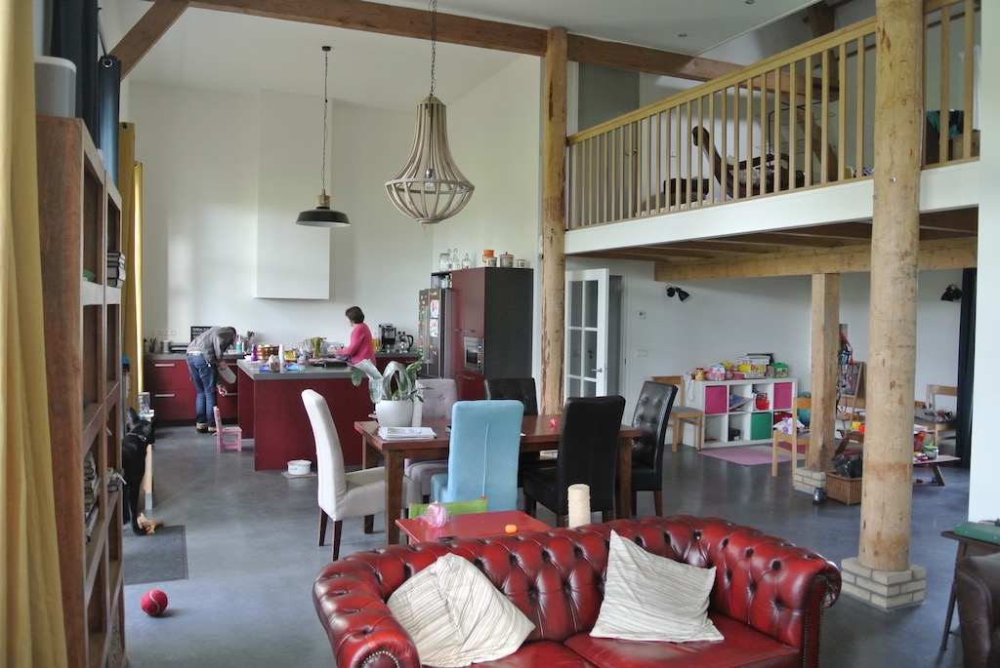

On Friday 4th November 2016 we left home at ten to nine in the morning and drove to Gatwick. We checked our bags and went through security with enough time for a coffee before the gate was announced. Unfortunately the plane was then delayed by 20 minutes due to a broken luggage net bolt in the hold. However, we got to Schiphol, had a sandwich and caught a train to Rotterdam just after 3pm. Krista met us at Capelsebrug and we were at their house (barn) just after four. Paul then got home half an hour later.
This was the first time that we had seen the barn completed, downstairs being mainly open plan. There is then a study and a bedroom off the mezzanine and a bathroom and three bedrooms (one with ensuite) on the top floor.
On Saturday e got up late after a fairly restless night. After a late breakfast we went for a walk, mainly in the sunshine and before the sky went grey. Greet and Wim were there when we got back, working on the shed roof. So we moved some of the roofing sheets from the front and helped put some on the roof. They left after lunch. So Paul, Angela and Rowan cleared leaves while I tried tuning their guitar. Then we played games with Rowan.
Sunday was a lazy day after a night disturbed by heavy rain falling on the tin roof of the barn. We got up late-ish (woken by Rowan again) and had a shower. Paul cooked pancakes for breakfast and then we passed the morning dodging the showers, just looking at what Paul had to do outside. We then went out for lunch in Bergambacht, which was good, and played a game when we got back, before speaking with Austin. A snack for tea and the day was over.
We left Paul's at 10:30 on Monday morning. He drove us to Capelsebrug Metro station, so we went to Rotterdam and caught the fast train to Schiphol. We arrived at midday, but it was one o'clock before we were checked in and got through security. We arrived home at 4:30.
© David James 2017 Last updated: 13th November 2018